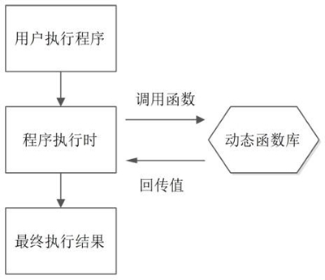

Linux函数库（静态函数库和动态函数库）及其安装过程
需要注意的是，函数库中的函数并不是以源代码的形式存在的，而是经过编译后生成的二进制文件，这些文件无法独立运行，只有链接到我们编写的程序中才可以运行。
Linux 系统中的函数库分为 2 种，分别是静态函数库（简称静态库）和动态函数库（也称为共享函数库，简称动态库或共享库），两者的主要区别在于，程序调用函数时，将函数整合到程序中的时机不同：- 静态函数库在程序编译时就会整合到程序中，换句话说，程序运行前函数库就已经被加载。这样做的好处是程序运行时不再需要调用外部函数库，可直接执行；缺点也很明显，所有内容都整合到程序中，编译文件会比较大，且一旦静态函数库改变，程序就需要重新编译。
-
动态函数库在程序运行时才被加载（如图 1 所示），程序中只保存对函数库的指向（程序编译仅对其做简单的引用）。

图 1 函数库调用
使用动态函数库的好处是，程序生成的可执行程序体积比较小，且升级函数库时无需对整个程序重新编译；缺点是，如果程序执行时函数库出现问题，则程序将不能正确运行。
Linux 系统中，静态函数库文件扩展名是 ".a"，文件通常命令为 libxxx.a（xxx 为文件名）；动态函数库扩展名为 ".so"，文件通常命令为 libxxx.so.major.minor（xxx 为文件名，major 为主版本号，minor 为副版本号）。
目前，Linux 系统中大多数都是动态函数库（主要考虑到软件的升级方便），其中被系统程序调用的函数库主要存放在 "/usr/lib" 和 "/lib" 中；Linux 内核所调用的函数库主要存放在 "/lib/modules" 中。
注意，函数库（尤其是动态函数库）的存放位置非常重要，轻易不要做更改。
Linux 函数库的安装
Linux 发行版众多，不同 Linux 版本安装函数库的方式不同。CentOS 中，安装函数库可直接使用 yum 命令。例如，安装 curses 函数库命令如下：
[root@Linux ~]# yum install ncurses-devel
正常情况下，函数库安装完成后就可以直接被系统识别，但凡事都有万一。这里先想一个问题，如何查看可执行程序调用了哪些函数库呢？通过以下命令即可：
[root@localhost ~]# ldd -v 可执行文件名
-v 选项的含义是显示详细版本信息（不是必须使用）。例如，查看 ls 命令调用了哪些函数库，命令如下：
[root@localhost ~]# ldd /bin/ls
linux-gate.so.1 => (0x00d56000)
libselinux.so.1 =>/lib/libselinux.so.1 (0x00cc8000)
librt.so.1 =>/lib/librt.so.1 (0x00cb8000)
libcap.so.2 => /lib/libcap.so.2 (0x00160000)
libacl.so.1 => /lib/libacl.so.1 (0x00140000)
libc.so.6 => /lib/libc.so.6 (0x00ab8000)
libdl.so.2 => /lib/libdl.so.2 (0x00ab0000)
/lib/ld-linux.so.2 (0x00a88000)
libpthread.so.0 => /lib/libpthread.so.0 (0x00c50000)
libattr.so.1 =>/lib/libattr.so.1 (0x00158000)
-
将函数库文件放入指定位置（通常放在 "/usr/lib" 或 "/lib" 中），然后把函数库所在目录写入 "/etc/ld.so.conf" 文件。例如：
[root@localhost ~]# cp *.so /usr/lib/
注意，这里写入的是函数库所在的目录，而不单单是函数库的文件名。另外，如果自己在其他目录中创建了函数库文件，这里也可以直接在 "/etc/ld.so.conf" 文件中写入函数库文件所在的完整目录。
#把函数库复制到/usr/lib/目录中
[root@localhost ~]# vi /etc/ld.so.conf
#修改函数库配置文件
include ld.so.conf.d/*.conf
/usr/lib
#写入函数库所在目录（其实/usr/lib/目录默认已经被识别） -
使用 ldconfig 命令重新读取 /etc/ld.so.conf 文件，把新函数库读入缓存。命令如下：
[root@localhost ~]# ldconfig
#从/etc/ld.so.conf文件中把函数库读入缓存
[root@localhost ~]# ldconfig -p
#列出系统缓存中所有识别的函数库
关注微信公众号「站长严长生」，在手机上阅读所有教程，随时随地都能学习。本公众号由C语言中文网站长运营，每日更新，坚持原创，敢说真话，凡事有态度。

微信扫描二维码关注公众号